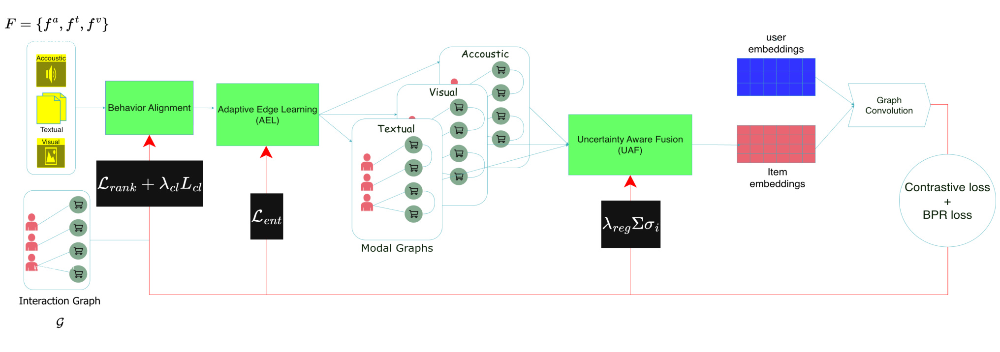
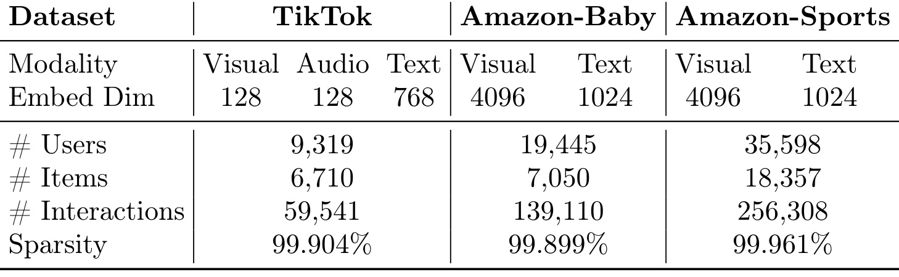
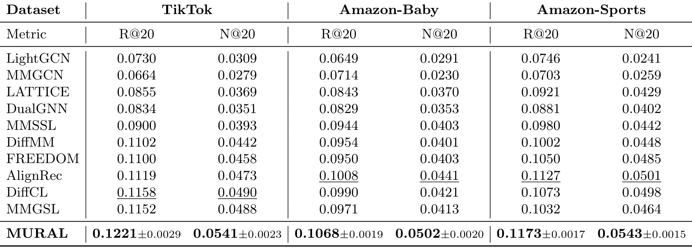
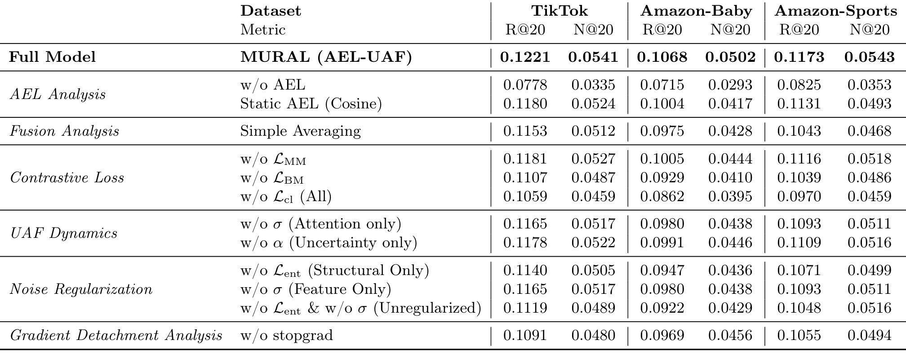
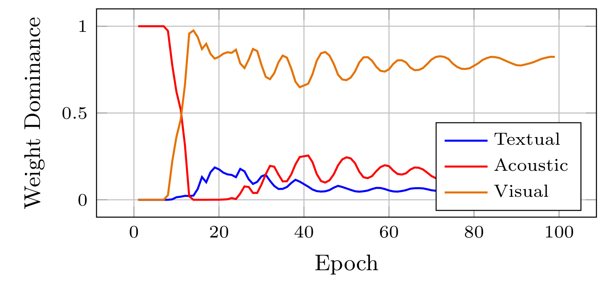
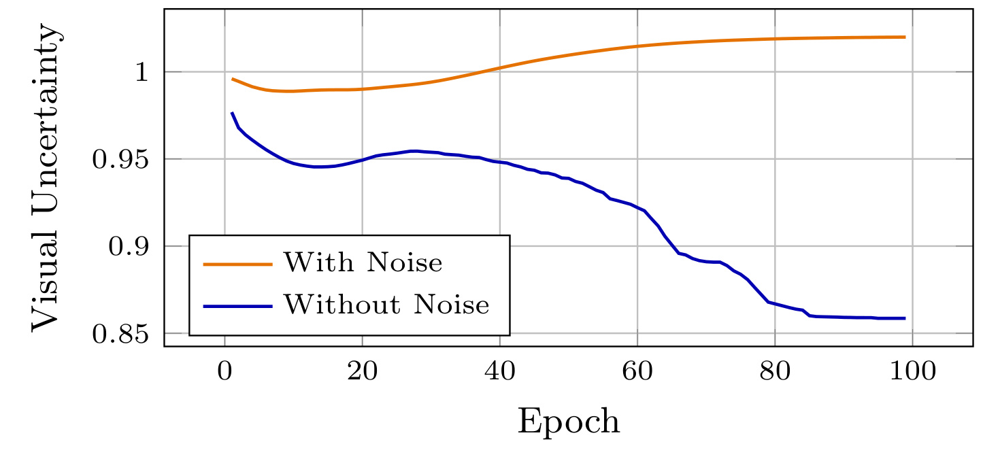
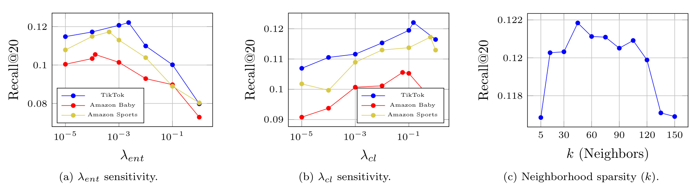

MURAL：用自适应边学习与不确定性融合改进多模态推荐
- 英文标题：MURAL: Multimodal Uncertainty-aware Recommendation via Adaptive edge Learning
- 作者：Ahmad Mousavi、Majid Alikhani、Yeon-Chang Lee、Roberto Corizzo、Yeganeh Abdollahinejad；前两位共同贡献。
- 机构：第一作者来自 American University（美国大学）；其他署名包括独立研究者、UNIST 和 Michigan State University。
- 来源与日期：arXiv 预印本，v1 于 2026-09-04 00:06:53 UTC 提交；本文记录日期为 2026-09-09。
- 论文入口：arXiv:2609.04574
- 代码/项目状态：已检查摘要页与原文链接，本轮未核验到本文独立公开代码或项目页。
- 阅读口径：覆盖全 12 页；保留 Figure 1–4、Table 1–3。以下数值来自原文，百分比提升为按表中均值计算；方法缺口与迁移建议属于笔记分析。
MURAL 研究如何让多模态物品图同时适应推荐目标与内容质量，第一作者来自美国大学，合作署名包括 UNIST、密歇根州立大学和独立研究者。论文在 2026 年 9 月 4 日以预印本公开，其可核验入口见上方链接，目前尚未核验到独立公开代码或项目页。下面沿原文的行为锚定、候选内建边、模态融合和图传播展开，并把准确率证据与不确定性解释、系统成本的证据分开讨论。
现有多模态推荐常依赖静态、预先计算的相似图，难以随推荐目标调整物品关系；不同物品的模态质量又不一致，不加区分地融合噪声内容会扭曲协同信号。如何共同学习适应任务的物品拓扑与物品级模态可靠性，是本文要解决的核心缺口。
1. 背景和问题
多模态推荐常见的出发点是：用户历史交互十分稀疏，商品标题、图片、视频和音频可以补充行为图没有覆盖的联系。同一款婴儿用品可能因为包装、用途或文字描述相近，与另一些商品共享潜在受众；两段短视频也可能在视觉主题上接近，却没有被同一批用户消费。若模型只在用户与物品之间传递信息，就只能沿已有行为边寻找相似性，对尚未形成共现关系的内容缺少桥梁。因此，构造物品之间的多模态关系图，已经成为在稀疏交互中引入辅助监督的一条自然路径。
问题在于，内容上的相似并不自动等于偏好上的可替代。统一流行配乐可能连接很多主题完全不同的视频，商品描述中的套话也可能让用途不同的产品聚到一起。视觉编码器擅长捕捉的颜色或构图，未必是决定用户购买的因素。如果先用固定余弦相似度构图，再让推荐模型在这张图上传播，训练能够改节点表示，却未必能够及时摆脱建图时留下的错误邻居。网络越深入，早期的错误连接可能越容易扩散；简单增加内容维度也不能修复这类结构偏差。
原文把第一类障碍称为结构僵化：物品关系通常由预先计算的相似度或固定规则决定，难以随推荐目标和表示空间一起调整。另一类障碍是语义脆弱：不同物品的模态质量并不一致，固定平均或只看相关性的融合策略，可能让可靠行为信号被低质量内容稀释。这两件事相互作用。图连接决定模型会聚合谁，而融合权重决定某个物品靠什么内容被表示；若一个环节把噪声当作稳定关系，另一个环节又持续放大噪声，增加训练轮次可能只是加强已有偏差。
评估这两类瓶颈是否得到缓解，需要分别观察三个可分别检验的对象：候选邻居是否足够好、候选内的边权是否比固定相似度更有用，以及不同模态的权重是否对噪声有响应。把这三个问题拆开，才能判断主表提升到底来自何处。
原文相关工作给出的演进路径可以进一步说明改进对象。早期 VBPR 把视觉特征引入成对排序，让内容直接参与用户偏好打分；后来 MMGCN 按模态建立独立消息传递通道，GRCN 调整交互边权，以减少不可靠行为关系的影响。这些路线主要沿已有用户物品交互结构传播。对于交互稀少、但内容确实相关的一对物品，若二者附近没有足够共同用户，仅调整已有边可能仍然无法建立连接。因此，MURAL 所强调的潜在物品关系，针对的是行为支持不足时内容能否提供额外结构，而不只是为已有交互再增加一个特征向量。
另一条路线由 LATTICE 等物品图方法代表：先从多模态特征中寻找近邻，再把潜在关系用于推荐。FREEDOM 则采取冻结物品图并处理交互噪声的设计，强调稳定结构本身的价值。MURAL 与这些工作的区别，不能简单概括为“过去没有物品图，现在有了物品图”；真正需要比较的是相同内容和候选条件下，任务驱动的边评分与索引更新是否优于固定结构。静态图能够节省重建并提供稳定传播路径，动态结构则多出适应空间，也多出优化不稳定和错误邻居反复变化的可能。后文将完整模型同时与无边增强、静态余弦边比较，正是为了把这两层差异拆开。
对齐和生成式去噪又提供了不同的处理角度。原文讨论的 MMSSL、AlignRec 以及扩散类方法，通过自监督一致性、跨视图对齐或去噪改善表示；它们提醒读者，弱推荐结果可能来自内容与偏好语义没有对齐，而不一定只来自错误边。MURAL 因而保留行为模态和跨模态对比，同时对拓扑集中程度施加约束。这里存在一个需要实验决定的取舍：一致性过弱时各视图难以共享监督，一致性过强时又可能压掉模态独有的信息。方法是否成功，应体现在保留这种互补性的同时改善排序，而不能只看几个表示在空间里变得更加接近。
作者还强调“镜像效应”：当多模态图过度依赖同一份行为监督时，各个模态图可能逐渐变成原始交互结构的重复拷贝，无法提供内容空间独有的新关联。这解释了为何 MURAL 一方面要把行为表示加入建边网络，另一方面又要限制梯度回流。行为给内容提供任务方向，但行为教师不能完全被学生的对齐目标牵着走，否则所谓多视图学习可能只是几个相互迁就的相同表示。这里的张力并没有被一种损失自动消除，后文需要分别检查停止梯度的位置、结构学习路径以及对齐损失本身的写法。
MURAL 的定位是一个静态数据集上的多模态图推荐框架。它使用图传播、成对排序损失和对比学习，最终通过用户与物品向量的内积打分；它没有直接生成自然语言推荐，也没有训练面向对话的推荐代理。与大模型的关系主要在内容表示和可迁移的可靠性建模思想，而非用大模型替代排序器。原文列举 BERT、ViT、AudioLM 或低秩适配作为可用编码方式，但实际实验描述的是预训练特征与投影，不能把举例的编码器名单视为已经端到端训练这些基础模型的证据。
对工程读者而言，它值得读的地方在于把“找候选”和“学连接”组合起来：全量物品两两比较代价太高，完全冻结的近邻图又缺少任务适应性，因此用近似检索控制搜索范围，再让小网络修正边权，是能够与现有内容召回链路对应的设计。与此同时，逐物品逐模态的自由参数会引入新物品初始化、参数存储和可靠性可解释性问题，周期重建索引也会影响训练效率。这些实际约束应该与离线精度同时讨论，不能因为题目强调可扩展性，就默认已有生产系统级实测支持。
阅读本篇时还需要防止三个语言滑动：把训练中更新拓扑说成已经验证真实偏好随时间演化；把学习到的置信系数说成已校准的概率；把小规模公开数据的全量排序说成线上全量商品检索。原文的实验能够给出模块有效性的初步证据，但尚未覆盖这些更强命题。尤其是噪声实验中均值曲线的方向，即便符合直觉，也只说明模型参数会响应注入噪声，不能直接解释每个物品是否被正确识别、更不能替代推荐质量在污染下的退化曲线。
2. 方法
2.1 行为锚定与候选内边学习
原文先把不同模态映射到共同的低维空间，再用行为表示引导内容表示。内容编码输出经线性投影与归一化，行为表示来自交互传播；两者以可学习系数相加，但行为侧在这条混合路径上停止梯度。作者还规定行为混合系数只由结构对比目标更新，避免主排序任务直接把它推向行为捷径。对应原文公式（1）和（2）：
符号解释：$i$ 是物品，$m$ 是模态，$f_i^{(m)}$ 是原始或预训练内容特征，$W_m$ 把编码器输出映射到公共维度；$h_i$ 表示行为向量，$\kappa_0$ 与 $\kappa_1$ 控制行为和内容的比例。停止梯度仅意味着当前分支不通过这一份 $h_i$ 反传，并不意味着整套模型冻结行为表示。这里使用线性混合是为了降低反复建图的代价，而不是声称它能表达任意跨模态交互。原文对后续打分网络直接输入的行为向量是否同样停止梯度，没有在公式（3）显式标注，复现时应核对实际计算图。

Figure 1 把行为图和音频、文字、视觉三路特征画在左端，经行为对齐进入自适应边学习，再形成模态图和融合表示，最后进入图卷积与排序、对比目标。红色箭头表示训练目标对模块施加约束，浅蓝色箭头给出信息流。图中三张叠放的模态图属于同一原始框架对象，不代表本文分别训练三个互不联系的推荐器。要结合公式理解图中的简化：不确定性融合影响物品表示与检索输入，而混合邻接矩阵承担图传播；两者不是同一组权重。图中的黑色不确定性正则框写成对 $\sigma$ 求和的示意，而正文总目标写的是对 $\log\sigma$ 求和，因此实现应以明确的数学定义核对，不能照搬框图符号。另外，图没有画出 HNSW 重建、候选截断和停止梯度细节，不能据此认定端到端所有操作可微。真正决定动态能力的，是候选集合更新频率和候选内部打分能否把任务相关邻居留下来。
在候选发现阶段，模型用融合后的物品向量建立 HNSW 近似内积检索索引，为每个物品取 $K_r$ 个候选。原文说每十轮重新建索引，在中间轮次保持候选集合不变，但边打分继续更新。这意味着“动态”包含两个不同频率：粗候选周期改变，候选内强弱逐轮学习。若相关物品未被 ANN 召回，后面的神经网络无法凭空把它加入当前候选。可学习的是候选内的打分与权重；离散检索、索引刷新和 Top-k 选边不能因打分网络可微就被统称为全链可微。原文公式（3）和（4）为：
符号解释：$\phi_\theta^{(m)}$ 是每种模态的小型多层感知机，输入为四个 $d$ 维向量的拼接，$s_{ij}^{(m)}$ 是边得分；$\mathcal N_r(i)$ 为近似检索候选，$\mathcal N_k(i)$ 为其中得分最高的 $k_m$ 个邻居；$A_{ij}^{(m)}$ 是该邻域内归一化权重。它把内容相似与行为相似联合用于选边，而不是单纯对原始内容计算余弦。为了避免每个物品只依赖一个邻居，作者最小化负熵，下面将原文无编号正则与打分定义分开列出：
符号解释：求和覆盖物品、模态及保留邻居；在邻居数量固定且边权和为一时，最小化此项倾向于更分散的权重。它限制的是选中邻居之间的集中程度，不直接保证候选是正确语义关系，也不自动保证邻居数量最优。过强正则甚至可能给弱相关候选过多权重，所以需要和排序目标、稀疏度一起调节；这是后文超参数曲线先升后降的合理解释，仍需区分机制推断与作者实测。
2.2 注意力与逐物品不确定性融合
UAF 为每个物品的每种模态提供两种系数：注意力用来表示当前任务相关程度，逆方差用来调节置信强弱。注意力由接收全部模态向量与行为向量的轻量网络产生；方差则不是由这一网络根据内容即时预测，而是显式存储的逐物品逐模态参数。原文学习对数方差并以零初始化，从而初始逆方差为一。对应公式（5）和（6）：
符号解释：$a_i^{(m)}$ 是注意力网络的 logit，$\alpha_i^{(m)}$ 在模态维归一化，$\sigma_i^{(m)}>0$ 为该物品该模态的不确定性尺度，$s_i^{(m)}$ 为对应对数方差；这里的 $s_i^{(m)}$ 与前面的边分数 $s_{ij}^{(m)}$ 不是一个变量。最终系数是注意力乘逆方差，其和不一定为一，因此该融合不仅改变模态占比，也可能改变向量整体尺度。称其为概率置信度会超出公式本身能支持的含义。
“对每个物品学习方差”与“对新内容估计噪声”存在实际差距。已见物品经过排序反馈可以调整自己的参数；没有训练反馈的新物品需要默认初始化或新增预测机制。作者把该量称为偶然不确定性，但没有给出显式观测噪声似然，也没有在本式中出现按方差缩放的重建残差。注意力与方差在乘积中还可能相互补偿，因此去掉其中一个模块造成性能下降，只能说明这套参数化有用，不能证明二者在统计上完全可辨识。尤其是正系数的 $\sum\log\sigma$ 单独最小化会鼓励 $\sigma$ 减小，与“防止方差塌缩为零”的原文表述并不直接一致。若总参数平方正则包含对数方差，它可能共同限制极端值，但需要代码明确参数集合及约束；这仍不是概率校准证明。
2.3 混合图传播与联合优化
原文接着将用户物品交互图和各模态物品图组合。因为模态图只连接物品，需要先扩展为完整节点集合上的右下角子块，再和行为邻接做非负加权。传播采用 LightGCN 风格，只做邻接乘法并平均各层输出；可选跳连再把传播向量与 UAF 融合向量混合。公式（7）至（9）及层平均关系可连写为：
符号解释：$\lambda_{UI}$ 与 $\lambda_m$ 是可学习的非负图混合系数，与物品级模态注意力不同；$H^{(0)}$ 堆叠用户和物品初始向量，$L$ 是传播层数，$v$ 表示任一节点。物品模态子图的用户行全为零，所以各子图行归一化并不意味着混合后每个用户行的和仍为一。训练需遵循论文给出的块结构，不能误把模态邻接扩展为含有用户内容特征的图。可选跳连为 $h_i\leftarrow\beta h_i+(1-\beta)\tilde h_i$，让最终物品表示保留直接内容路径。
双对比目标分别对齐同一物品的行为与模态表示、以及不同模态表示。前者给语义空间提供偏好锚点，后者鼓励不同内容通道指向共同物品。原文公式（10）与（11）为：
符号解释：$\operatorname{sim}$ 为余弦相似度，$\tau$ 控制区分正负对的温度，同一物品构成正对，分母中的其他物品构成竞争项。原文没有在这两式里显式写停止梯度，也未用逆方差直接加权每个对比项；不能将摘要中可靠性过滤对比信号的说法扩写成一个未给出的加权 InfoNCE。实现时需要确认负对来自批内还是全集，以及行为教师究竟在哪些路径被截断。停止梯度的消融支持当前设计有益，但不能替代计算图定义。
最终预测使用内积，BPR 让正交互物品得分高于训练采样负例；其训练采样不妨碍测试时进行全量物品排序。对应公式（12）为：
符号解释：$u$ 是用户，$i^+$ 和 $i^-$ 是训练正负物品；这里的 sigmoid 不是模态不确定性 $\sigma$。模型鼓励两者的得分差增大，同时通过辅助损失限制结构、内容和行为之间的不一致。完整目标是原文公式（13）：
符号解释：$\Theta$ 是作者所称全部可学习参数，三个 $\lambda$ 分别平衡对比、邻域负熵和参数正则。优化器为 Adam。此式明确保留了存在解释争议的对数尺度项，而没有替作者改成另一个损失。它的实践价值应通过消融与训练稳定性判断；要把它解释成有严格统计意义的不确定性学习，还需要明确似然、可辨识性和校准评估。
3. 实验结果
3.1 数据与评估边界

Table 1 显示 TikTok 有 9,319 名用户、6,710 个物品与 59,541 条交互，包含视觉、音频、文本三种模态，其输入维度分别为 128、128、768。Amazon-Baby 有 19,445 名用户、7,050 个物品、139,110 条交互；Amazon-Sports 有 35,598 名用户、18,357 个物品、256,308 条交互，两者均使用视觉和文本，维度分别为 4096 和 1024。表中的稀疏率依次为 99.904%、99.899%、99.961%，说明内容辅助确实面对稀疏监督，但这与互联网平台的整体物品规模不能等同。所有数据的物品数最多不到两万，足以做完整候选排序与图方法对比，却不足以直接证明数千万内容库的重建吞吐。文本由 Sentence-BERT 表示，视觉使用已有高维特征；原文没有把每项特征的具体检查点、预处理和适配成本完整展开，因此复现应先锁定输入资产，否则建图质量差异可能来自编码器而非 AEL。
测试采用全量排序：对测试用户，把真实相关物品与其未交互的全部物品一起排序，报告 Recall@20 和 NDCG@20。前者关注前二十名覆盖多少目标，后者还关心目标在列表中的位置。它与只随机抽五百个负例、再计算前十名的评估口径不可比，更不能横向比较绝对数值后给不同任务论文排名。训练用 BPR 负例采样和测试用全量候选并不矛盾，一个控制优化成本，另一个决定评估难度。原文没有清楚交代时间切分比例、是否按用户留出最近行为、过滤规则和时间泄漏检查，因此“随偏好动态演化”的结论只能理解为训练内表示与图的变化。
作者称统一环境重跑基线、使用原论文搜索范围并全面调参。共同设置为 Adam、批大小 1024、隐藏维度 64，学习率为千分之一。候选数在 100 至 1000 搜索，保留邻居数在 5 至 150 搜索，对比、熵与正则权重在十万分之一至一之间调整。这些信息让大体比较框架可以理解，但最佳配置逐数据集表、早停标准、随机种子清单与显卡信息仍不充分。所谓全面搜索也不等于各模型享有完全相同的算力预算，解释排名时应保留这一不确定性。
3.2 全量排序的收益与统计含义

Table 2 是最有直接决策价值的证据。TikTok 上 MURAL 的 Recall@20 为 0.1221，NDCG@20 为 0.0541，最强基线 DiffCL 对应 0.1158 与 0.0490；按均值计算，相对提升约 5.44% 和 10.41%。Amazon-Baby 上为 0.1068 与 0.0502，对比最强 AlignRec 的 0.1008 与 0.0441，相对提升约 5.95% 和 13.83%。Amazon-Sports 上为 0.1173 与 0.0543，对比 AlignRec 的 0.1127 与 0.0501，相对提升约 4.08% 和 8.38%。这六项都领先本表基线，且 NDCG 相对增幅更大，提示改进不只是找回更多相关物品，也包括将它们放到更靠前位置。它们是离线排序指标的相对变化，不能说成点击率提高同样百分比，也不能把小数差误写成数十个百分点。三个数据域中最强参照模型并不相同，因此表内比较应逐域选择基线；婴儿用品的排序位置指标相对增幅最大，也不能据此认定其绝对推荐质量最高。
主表给出五次独立运行的算术均值，MURAL 的六项标准差按表顺序为 0.0029、0.0023、0.0019、0.0020、0.0017、0.0015。表下注明所有指标标准差小于 0.003，并声称相对最强基线的改进达到 $p<0.01$，但没有提供基线逐格方差、配对种子结果、检验类型或置信区间。因此应转述为作者报告显著性，而非读者已经独立复核显著。五次随机种子的标准差衡量训练随机性，不等于用户抽样误差或跨时间漂移；更不能把“均值加减标准差”直接称为百分之九十五置信区间。
表中也能检查作者的概括是否过宽。TikTok 上 MMGCN 的 Recall 0.0664 低于 LightGCN 的 0.0730，NDCG 0.0279 也低于 0.0309；Amazon-Baby 的 MMGCN 虽 Recall 更高，NDCG 却更低。因而原文关于多模态模型普遍优于纯协同模型的表述，应缩窄为部分先进多模态模型在这些设置上更好。加入更多内容并非天然增益，这恰好强化了本文关心的噪声和结构选择问题。表中包含生成式扩散与对齐类强基线，但没有给出相同训练预算下的收敛速度，也没有在线干预试验，所以不能从排名直接断言 MURAL 比扩散方法更省钱。
3.3 结构、融合与梯度消融

Table 3 可以先横读 TikTok 的 Recall，再检查同一趋势是否跨域成立。完整模型 0.1221，移除 AEL 后为 0.0778，而保留静态余弦边为 0.1180。因此大部分“相对无边增强”的差距来自引入物品关系本身，动态 MLP 相对静态图的进一步收益为 0.0041，约 3.47%。若只拿无 AEL 对照宣称自适应打分提升百分之五十以上，会把结构增强和学习边权两种贡献混在一起。Baby 上完整与静态为 0.1068 和 0.1004，Sports 上为 0.1173 和 0.1131，支持候选内学习有跨数据集收益，但表中没有单独隔离周期重建、固定候选打分和 HNSW 检索质量，不能判断三者各自带来多少。
融合消融中，简单平均的 TikTok Recall 为 0.1153；只用注意力为 0.1165，只用不确定性为 0.1178，完整为 0.1221。Baby 的对应四项为 0.0975、0.0980、0.0991、0.1068，Sports 为 0.1043、0.1093、0.1109、0.1173。结果支持双系数设计在这套训练流程里有效，却不能证明注意力捕捉相关性、方差捕捉噪声的解释唯一正确。两个参数都可能参与缩放，并通过梯度影响索引和推荐表示。要证明统计职责可分，需要固定一个通道、控制噪声强度并测逐物品识别和校准质量，而不仅是比较去模块后指标。
对比学习的行为锚点相当重要：TikTok 去跨模态对比后 Recall 为 0.1181，去行为模态对比后为 0.1107，全去为 0.1059。停止梯度移除后为 0.1091，相比完整模型下降约 10.65%；Baby 与 Sports 同样下降。可见阻断特定对齐路径确实改善结果，但这里仍然只测最终准确度，没有给出梯度冲突、表示坍塌或图同构度的直接诊断。将这项消融解读为训练设计必要性较合理，将它解读为已完全证明“镜像效应被消除”则证据不足。
邻域熵与方差同时去除时，TikTok Recall 为 0.1119，低于分别去熵的 0.1140 和去方差的 0.1165，体现出一定互补性。不过 Sports 的 NDCG 出现需要保留的细节：同时去除两者是 0.0516，反而略高于只去熵的 0.0499 和只去方差的 0.0511，虽然仍低于完整模型 0.0543。没有各消融的方差和统计检验，不能把这种非单调性解释成反常机制，也不能略过它后宣称全部指标具有严格可加贡献。消融更适合支持完整组合在总体上优于单个删减版本，而不是为每条机制附加过强因果结论。
3.4 模态占优与噪声实验

Figure 2 的纵轴不是平均注意力，也不是视觉对最终性能的贡献百分比，而是“某个模态在该物品的联合权重中最大”的物品比例。视觉曲线在初期上升，后期大致居于高位，音频与文本比例较低；这说明学到的联合系数会对不同内容通道进行选择。它不意味着每个物品都将其他模态置零，也不能从视觉占优物品多推出视觉模态拥有固定的信息密度优势。曲线同时受注意力、逆方差、特征尺度和训练数据偏好影响，且初始音频几乎完全占优、随后快速切换，说明优化过程本身也会塑造统计。原文将后期视觉优先解释为短视频视觉更具辨识度，属于与数据域一致的解释，但若想推广到语音播客、教学视频或含有关键文字的内容，应分内容类型重新验证。对推荐工程更可用的诊断是逐类别记录占优比例和丢弃某模态的性能变化，而不是直接设置全平台视觉优先规则。

Figure 3 比较干净训练与噪声训练的平均视觉不确定性。作者对百分之二十物品的视觉特征注入高斯噪声；干净曲线总体下降，而加噪曲线后期上升，符合不可靠视觉应该被降低权重的设计方向。图里干净曲线末期约在 0.86 附近，噪声曲线约在 1.02 附近，这些仅是目视读图范围，并非正文提供的精确实验表值。必须强调均值的限制：即便整体均值升高，也可能来自所有物品一起变动，不能证明恰好识别出受污染的那百分之二十物品。原文没有同时画受污染与未污染子集分布、噪声强度扫描、逐物品噪声标签识别质量和相应 Recall 退化。因而这张图支持“参数对噪声有响应”，不足以支持“已经校准偶然不确定性”或“在极端污染下推荐质量得到量化保障”。噪声注入发生于特征空间，也与真实图片缺失、字幕错配和背景音流行的结构化噪声不同，后者需要专门对照。
3.5 超参数与未测量的系统成本

Figure 4 包含原生三联图：左图改变邻域负熵权重，中图改变对比权重，右图只对 TikTok 改变邻居数。左图显示过强熵约束会明显降低三域 Recall，因为边权过度均匀可能损害任务选择性；中图显示适当增强对齐有用，但最佳位置随数据域变化；右图邻居数从极小增加后先改善，在约四五十附近达到较高水平，再向很大邻域扩张时下降。右图的具体峰值点没有表格精确标注，不应伪造为所有数据统一最优超参。后半段下降表明更多边可能引入弱相关内容，邻域丰富度与语义噪声存在交换。图中没有误差棒、不同随机种子的置信带或每个点对应的运行时间，因此峰值周围小幅起伏不宜过度解释，也不能据此断言 UAF 已对图密度完全不敏感。
系统复杂度需要拆成三部分。候选边评分为 $O(MN_iK_rd)$；稀疏图传播为 $O((|E_{UI}|+N_i\sum_m k_m)d)$；ANN 检索被作者写作摊销 $O(N_i\log N_i)$。这些式子仍依赖候选数、模态数、维度、保留邻居数和传播层数，不能把检索的一个渐近项当作端到端训练成本。重建索引还涉及编码器输出、物品向量更新、CPU 与 GPU 传输、索引内存及批量查询，动态 Top-k 也有实际开销。原文称十轮重建达成良好折中，但没有刷新间隔消融表、重建时间或峰值内存实测，因此“已具备生产规模吞吐”的说法尚缺直接支持。
全文没有独立效率表、线上试验、真实冷启动时间切分或附录补充这些证据。参考文献占据尾页，七个可辨认图表都已在本文对应章节保留。现阶段最可靠的实验判断是：在给定多模态特征与三个稀疏公开数据集的全量排序口径下，完整 MURAL 的五次种子均值领先所列基线，多种删减版本退化，学习系数对合成视觉噪声有方向性响应；其余关于真实时间适应、可校准置信度与大规模效率的命题仍需补做实验。
4. 总结
MURAL 的可复用思路是把推荐图结构当作随任务学习的对象，并将模态融合拆为相关性和可靠性两个调节通道。近似检索缩小搜索范围，候选内网络同时参考行为和内容，图传播把这些物品关系转化为用户与物品表示，对比学习再约束不同视图的一致性。主表和消融提供了连续证据链：增加物品关系有效，固定关系之上学习边权还有增益，简单平均或删除方差、对齐、停止梯度都会在总体上降低结果。因此它适合作为多模态图推荐的复现实验候选，尤其适用于已经有内容向量与行为图、希望判断内容关系是否值得动态更新的团队。
迁移到推荐召回时，可以先将现有内容近邻作为候选集，训练一个轻量的候选内边打分器，再比较固定图与定期更新图在长尾、内容缺失和新物品上的差异。这是笔记提出的工程实验，不是原文已经交付的线上能力。优先固定编码器和所有数据切分，才能避免“更好特征”替代“更好建图”的归因混淆。其次应同时记录候选召回率、最终排序质量、重建耗时、峰值内存和训练总时长；只有当离线增益相对于这些成本仍然合理，动态结构才有进一步落地价值。
对大模型应用，它启发的是检索增强与个性化记忆中的可靠性加权：相关文档不一定可信，用户记忆也可能陈旧，单纯相似度排序容易放大重复或低质量线索。可以借鉴先召回再学习关系的分层设计，在候选文档之间加入任务相关边，并独立测量来源可靠性。但不能直接把本文的物品自由方差当作文档真实性概率；新的文档没有训练过的参数，用户请求也可能改变可靠性标准。若迁移到代理记忆，需要能对新对象泛化的内容条件预测、明确时间戳与来源证据，并验证最终回答质量及错误引用，而不是只比较记忆图的邻域相似度。
目前最关键的局限有三类。第一，不确定性参数化与解释之间存在距离：正对数尺度正则的防塌缩论述不充分，注意力与逆方差乘积可能不可辨识，均值噪声图不足以证明校准。第二，评估外推存在缺口：未明确时间拆分与冷启动协议，合成特征噪声不同于真实缺失或错配，没有线上用户收益。第三，可复现和成本信息不足：本文代码尚未核验，最佳超参、停止梯度全路径、负对构造与索引更新细节需要澄清，也没有端到端训练和部署效率实测。这些缺口不抹去现有离线结果，但决定了不能把论文中的“鲁棒、可扩展”直接当作部署承诺。
接下来适合做三项跟进。先关注作者代码或修订版，核对方差参数是否进入平方正则、是否存在下界或截断、是否使用未在公式中展示的似然项，并用单物品可控例子检查梯度方向。再补候选召回与刷新频率实验，固定候选内打分容量比较静态、周期重建与持续更新，测精度和完整成本。最后建立严格时间留出与噪声分组评估，将污染物品和干净物品分开测校准、排序退化与长尾表现，给出多种子置信区间和稳定性结果。完成这些后，才能判断 MURAL 的优势究竟来自更灵活的参数容量、适当的图结构约束，还是能够泛化到现实噪声的不确定性建模。